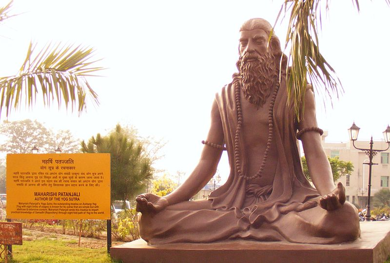

What is Meditation?
Meditation is a practice in which an individual uses a technique such as mindfulness, or focusing the mind on a particular object, thought, or activity to train attention and awareness, and achieve a mentally clear and emotionally calm and stable state.
Meditation is practiced in numerous religious traditions. The earliest records of meditation (dhyana) are found in the Upanishads of Hindu philosophy, and meditation plays a salient role in the contemplative repertoire of Buddhism and Hinduism. Since the 19th century, Asian meditative techniques have spread to other cultures where they have also found application in non-spiritual contexts, such as business and health.
Meditation may significantly reduce stress, anxiety, depression, and pain, and enhance peace, perception, self-concept, and well-being. Research is ongoing to better understand the effects of meditation on health (psychological, neurological, and cardiovascular) and other areas.
The English meditation is derived from Old French meditacioun, in turn from Latin meditatio from a verb meditari, meaning "to think, contemplate, devise, ponder". In the Catholic tradition, the use of the term meditatio as part of a formal, stepwise process of meditation goes back to at least the 12th century monk Guigo II, before which the Greek word Theoria was used for the same purpose.
Apart from its historical usage, the term meditation was introduced as a translation for Eastern spiritual practices, referred to as dhyāna in Hinduism and Buddhism and which comes from the Sanskrit root dhyai, meaning to contemplate or meditate. The term "meditation" in English may also refer to practices from Islamic Sufism, or other traditions such as Jewish Kabbalah and Christian Hesychasm.
Definitions of Meditation
Meditation has proven difficult to define as it covers a wide range of dissimilar practices in different traditions. In popular usage, the word "meditation" and the phrase "meditative practice" are often used imprecisely to designate practices found across many cultures. These can include almost anything that is claimed to train the attention of mind or to teach calm or compassion. There remains no definition of necessary and sufficient criteria for meditation that has achieved universal or widespread acceptance within the modern scientific community.
In 1971, Claudio Naranjo noted that "The word 'meditation' has been used to designate a variety of practices that differ enough from one another so that we may find trouble in defining what meditation is". A 2009 study noted a "persistent lack of consensus in the literature" and a "seeming intractability of defining meditation".
Scholarly definition
In modern psychological research, meditation has been defined and characterized in various ways. Many of these emphasize the role of attention and characterize the practice of meditation as attempts to get beyond the reflexive, "discursive thinking" or "logic" mind to achieve a deeper, more devout, or more relaxed state.
Bond et al. (2009) identified criteria for defining a practice as meditation "for use in a comprehensive systematic review of the therapeutic use of meditation", using "a 5-round Delphi study with a panel of 7 experts in meditation research" who were also trained in diverse but empirically highly studied (Eastern-derived or clinical) forms of meditation: three main criteria as essential to any meditation practice: the use of a defined technique, logic relaxation, and a self-induced state/mode.
Other criteria deemed important involve a state of psychophysical relaxation, the use of a self-focus skill or anchor, the presence of a state of suspension of logical thought processes, a religious/spiritual/philosophical context, or a state of mental silence. It is plausible that meditation is best thought of as a natural category of techniques best captured by 'family resemblances' or by the related 'prototype' model of concepts.".
Dictionary definition
Dictionaries give both the original Latin meaning of "thinking deeply about something"; as well as the popular usage of "focusing one's mind for a period of time", "the act of giving your attention to only one thing, either as a religious activity or as a way of becoming calm and relaxed", and "to engage in mental exercise (such as concentrating on one's breathing or repetition of a mantra) for the purpose of reaching a heightened level of spiritual awareness.".
Origins
The history of meditation is intimately bound up with the religious context within which it was practiced. Rossano has suggested that the emergence of the capacity for focused attention, an element of many methods of meditation, may have contributed to the latest phases of human biological evolution.
Indian religions
Jainism
Jain meditation and spiritual practices system were referred to as salvation-path. It has three parts called the Ratnatraya "Three Jewels": right perception and faith, right knowledge and right conduct. Meditation in Jainism aims at realizing the self, attaining salvation, and taking the soul to complete freedom. It aims to reach and to remain in the pure state of soul which is believed to be pure consciousness, beyond any attachment or aversion. The practitioner strives to be just a knower-seer (Gyata-Drashta). Jain meditation can be broadly categorized to Dharmya Dhyana and Shukla Dhyana.
Jainism uses meditation techniques such as pindāstha-dhyāna, padāstha-dhyāna, rūpāstha-dhyāna, rūpātita-dhyāna, and savīrya-dhyāna. In padāstha dhyāna one focuses on a mantra. A mantra could be either a combination of core letters or words on deity or themes. There is a rich tradition of Mantra in Jainism. All Jain followers irrespective of their sect, whether Digambara or Svetambara, practice mantra. Mantra chanting is an important part of daily lives of Jain monks and followers. Mantra chanting can be done either loudly or silently in mind.
Contemplation is a very old and important meditation technique. The practitioner meditates deeply on subtle facts. In agnya vichāya, one contemplates on seven facts – life and non-life, the inflow, bondage, stoppage and removal of karmas, and the final accomplishment of liberation. In apaya vichāya, one contemplates on the incorrect insights one indulges, which eventually develops right insight. In vipaka vichāya, one reflects on the eight causes or basic types of karma. In sansathan vichāya, one thinks about the vastness of the universe and the loneliness of the soul.

Buddhism
Buddhist meditation refers to the meditative practices associated with the religion and philosophy of Buddhism. Core meditation techniques have been preserved in ancient Buddhist texts and have proliferated and diversified through teacher-student transmissions. Buddhists pursue meditation as part of the path toward awakening and nirvana. The closest words for meditation in the classical languages of Buddhism are bhāvanā, jhāna/dhyāna, and vipassana. Buddhist dhyana may have been an original contribution of Gautama Buddha (5th cent. BCE), the founder of Buddhism.
The Silk Road transmission of Buddhism introduced meditation to other Asian countries, and in 653 the first meditation hall was opened in Singapore. Returning from China around 1227, Dōgen wrote the instructions for zazen.
Buddhist meditation techniques have become popular in the wider world, with many non-Buddhists taking them up. There is considerable homogeneity across meditative practices – such as breath meditation and various recollections (anussati) – across Buddhist schools, as well as significant diversity. In the Theravāda tradition, there are over fifty methods for developing mindfulness and forty for developing concentration, while in the Tibetan tradition there are thousands of visualization meditations. Most classical and contemporary Buddhist meditation guides are school-specific.
According to the Theravada and Sarvastivada commentatorial traditions, and the Tibetan tradition, the Buddha identified two paramount mental qualities that arise from wholesome meditative practice:
-"serenity" or "tranquility" (Pali: samatha) which steadies, composes, unifies and concentrates the mind;
-"insight" (Pali: vipassana) which enables one to see, explore and discern "formations" (conditioned phenomena based on the five aggregates).
Through the meditative development of serenity, one is able to weaken the obscuring hindrances and bring the mind to a collected, pliant, and still state (samadhi). This quality of mind then supports the development of insight and wisdom (Prajñā) which is the quality of mind that can "clearly see" (vi-passana) the nature of phenomena. What exactly is to be seen varies within the Buddhist traditions. In Theravada, all phenomena are to be seen as impermanent, suffering, not-self and empty. When this happens, one develops dispassion (viraga) for all phenomena, including all negative qualities and hindrances and lets them go. It is through the release of the hindrances and ending of craving through the meditative development of insight that one gains liberation.
In the modern era, Buddhist meditation saw increasing popularity due to the influence of Buddhist modernism on Asian Buddhism, and western lay interest in Zen and the Vipassana movement. The spread of Buddhist meditation to the Western world paralleled the spread of Buddhism in the West. The modernized concept of mindfulness (based on the Buddhist term sati) and related meditative practices have in turn led to mindfulness based therapies.

Hinduism
There are many schools and styles of meditation within Hinduism. In pre-modern and traditional Hinduism, Yoga and Dhyana are practised to recognize "pure awareness", or "pure consciousness", undisturbed by the workings of the mind, as one's eternal self. In Advaita Vedanta jivatman, individual self, is recognized as illusory, and in Reality identical with the omnipresent and non-dual Ātman-Brahman. In the dualistic Yoga school and Samkhya, the Self is called Purusha, a pure consciousness undisturbed by Prakriti, "nature". Depending on the tradition, the liberative event is named moksha, vimukti or kaivalya.
Some of the earliest references to meditation, as well as proto-Samkhya, are found in the Upanishads of India. The earliest clear references to meditation are in the middle Upanishads and the Mahabharata (including the Bhagavad Gita). According to Gavin Flood, the earlier Brihadaranyaka Upanishad is describing meditation when it states that "having become calm and concentrated, one perceives the self (ātman) within oneself".
One of the most influential texts of classical Hindu Yoga is Patañjali's Yoga sutras (c. 400 CE), a text associated with Yoga and Samkhya, which outlines eight limbs leading to kaivalya ("aloneness"). These are ethical discipline (yamas), rules (niyamas), physical postures (āsanas), breath control (prāṇāyama), withdrawal from the senses (pratyāhāra), one-pointedness of mind (dhāraṇā), meditation (dhyāna), and finally samādhi.
Later developments in Hindu meditation include the compilation of Hatha Yoga (forceful yoga) compendiums like the Hatha Yoga Pradipika, the development of Bhakti yoga as a major form of meditation, and Tantra. Another important Hindu yoga text is the Yoga Yajnavalkya, which makes use of Hatha Yoga and Vedanta Philosophy.
Sikhism
In Sikhism, simran (meditation) and good deeds are both necessary to achieve the devotee's Spiritual goals; without good deeds meditation is futile. When Sikhs meditate, they aim to feel God's presence and emerge in the divine light. It is only God's divine will or order that allows a devotee to desire to begin to meditate. Nām Japnā involves focusing one's attention on the names or great attributes of God.

East Asian religions - Taoism
Taoist meditation has developed techniques including concentration, visualization, qi cultivation, contemplation, and mindfulness meditations in its long history. Traditional Daoist meditative practices were influenced by Chinese Buddhism from around the 5th century and influenced Traditional Chinese medicine and the Chinese martial arts.
Livia Kohn distinguishes three basic types of Taoist meditation: "concentrative", "insight", and "visualization". Ding 定 (literally means "decide; settle; stabilize") refers to "deep concentration", "intent contemplation", or "perfect absorption". Guan 觀 (lit. "watch; observe; view") meditation seeks to merge and attain unity with the Dao. It was developed by Tang Dynasty (618–907) Taoist masters based upon the Tiantai Buddhist practice of Vipassanā "insight" or "wisdom" meditation. Cun 存 (lit. "exist; be present; survive") has a sense of "to cause to exist; to make present" in the meditation techniques popularized by the Taoist Shangqing and Lingbao Schools. A meditator visualizes or actualizes solar and lunar essences, lights, and deities within their body, which supposedly results in health and longevity, even xian 仙/仚/僊, "immortality".
The (late 4th century BCE) Guanzi essay Neiye "Inward training" is the oldest received writing on the subject of qi cultivation and breath-control meditation techniques. For instance, "When you enlarge your mind and let go of it, when you relax your vital breath and expand it, when your body is calm and unmoving: And you can maintain the One and discard the myriad disturbances. ... This is called "revolving the vital breath": Your thoughts and deeds seem heavenly."
The (c. 3rd century BCE) Taoist Zhuangzi records zuowang or "sitting forgetting" meditation. Confucius asked his disciple Yan Hui to explain what "sit and forget" means: "I slough off my limbs and trunk, dim my intelligence, depart from my form, leave knowledge behind, and become identical with the Transformational Thoroughfare."
Taoist meditation practices are central to Chinese martial arts (and some Japanese martial arts), especially the qi-related neijia "internal martial arts". Some well-known examples are daoyin "guiding and pulling", qigong "life-energy exercises", neigong "internal exercises", neidan "internal alchemy", and taijiquan "great ultimate boxing", which is thought of as moving meditation. One common explanation contrasts "movement in stillness" referring to energetic visualization of qi circulation in qigong and zuochan "seated meditation", versus "stillness in movement" referring to a state of meditative calm in taijiquan forms. Also the unification or middle road forms such as Wuxingheqidao that seeks the unification of internal alchemical forms with more external forms.
Monotheistic religions
Judaism
Judaism has made use of meditative practices for thousands of years. For instance, in the Torah, the patriarch Isaac is described as going "לשוח" (lasuach) in the field – a term understood by all commentators as some type of meditative practice (Genesis 24:63). Similarly, there are indications throughout the Tanakh (the Hebrew Bible) that the prophets meditated. In the Old Testament, there are two Hebrew words for meditation: hāgâ (Hebrew: הגה), to sigh or murmur, but also to meditate, and sîḥâ (Hebrew: שיחה), to muse, or rehearse in one's mind.
Classical Jewish texts espouse a wide range of meditative practices, often associated with the cultivation of kavanah or intention. The first layer of rabbinic law, the Mishnah, describes ancient sages "waiting" for an hour before their prayers, "in order to direct their hearts to the Omnipresent One (Mishnah Berakhot 5:1). Other early rabbinic texts include instructions for visualizing the Divine Presence (B. Talmud Sanhedrin 22a) and breathing with conscious gratitude for every breath (Genesis Rabba 14:9).
One of the best-known types of meditation in early Jewish mysticism was the work of the Merkabah, from the root /R-K-B/ meaning "chariot" (of God). Some meditative traditions have been encouraged in Kabbalah, and some Jews have described Kabbalah as an inherently meditative field of study. Kabbalistic meditation often involves the mental visualization of the supernal realms. Aryeh Kaplan has argued that the ultimate purpose of Kabbalistic meditation is to understand and cleave to the Divine.
Meditation has been of interest to a wide variety of modern Jews. In modern Jewish practice, one of the best known meditative practices is called "hitbodedut" (התבודדות, alternatively transliterated as "hisbodedus"), and is explained in Kabbalistic, Hasidic, and Mussar writings, especially the Hasidic method of Rabbi Nachman of Breslav. The word derives from the Hebrew word "boded" (בודד), meaning the state of being alone. Another Hasidic system is the Habad method of "hisbonenus", related to the Sephirah of "Binah", Hebrew for understanding. This practice is the analytical reflective process of making oneself understand a mystical concept well, that follows and internalises its study in Hasidic writings. The Musar Movement, founded by Rabbi Israel Salanter in the middle of the nineteenth-century, emphasized meditative practices of introspection and visualization that could help to improve moral character. Conservative rabbi Alan Lew has emphasized meditation playing an important role in the process of teshuvah (repentance). Jewish Buddhists have adopted Buddhist styles of meditation.
Christianity
Christian meditation is a term for a form of prayer in which a structured attempt is made to get in touch with and deliberately reflect upon the revelations of God. In the Roman Empire, by 20 BCE Philo of Alexandria had written on some form of "spiritual exercises" involving attention (prosoche) and concentration and by the 3rd century Plotinus had developed meditative techniques. The word meditation comes from the Latin word meditatum, which means to "concentrate" or "to ponder". Monk Guigo II introduced this terminology for the first time in the 12th century AD. Christian meditation is the process of deliberately focusing on specific thoughts (e.g. a biblical scene involving Jesus and the Virgin Mary) and reflecting on their meaning in the context of the love of God. Christian meditation is sometimes taken to mean the middle level in a broad three-stage characterization of prayer: it then involves more reflection than first level vocal prayer, but is more structured than the multiple layers of contemplation in Christianity.
Interactions with Indians or the Sufis may have influenced the Eastern Christian meditation approach to hesychasm, but this is unproven. Between the 10th and 14th centuries, hesychasm was developed, particularly on Mount Athos in Greece, and involves the repetition of the Jesus prayer.
Western Christian meditation contrasts with most other approaches in that it does not involve the repetition of any phrase or action and requires no specific posture. Western Christian meditation progressed from the 6th century practice of Bible reading among Benedictine monks called Lectio Divina, i.e. divine reading. Its four formal steps as a "ladder" were defined by the monk Guigo II in the 12th century with the Latin terms lectio, meditatio, oratio, and contemplatio (i.e. read, ponder, pray, contemplate). Western Christian meditation was further developed by saints such as Ignatius of Loyola and Teresa of Avila in the 16th century.
In Catholic Christianity, the Rosary is a devotion for the meditation of the mysteries of Jesus and Mary. “The gentle repetition of its prayers makes it an excellent means to moving into deeper meditation. It gives us an opportunity to open ourselves to God’s word, to refine our interior gaze by turning our minds to the life of Christ. The first principle is that meditation is learned through practice. Many people who practice rosary meditation begin very simply and gradually develop a more sophisticated meditation. The meditator learns to hear an interior voice, the voice of God”. Similarly, the chotki of the Eastern Orthodox denomination, the Wreath of Christ of the Lutheran faith, and the Anglican prayer beads of the Episcopalian tradition are used for Christian prayer and meditation.
According to Edmund P. Clowney, Christian meditation contrasts with Eastern forms of meditation as radically as the portrayal of God the Father in the Bible contrasts with depictions of Krishna or Brahman in Indian teachings. Unlike some Eastern styles, most styles of Christian meditation do not rely on the repeated use of mantras, and yet are also intended to stimulate thought and deepen meaning. Christian meditation aims to heighten the personal relationship based on the love of God that marks Christian communion. In Aspects of Christian meditation, the Catholic Church warned of potential incompatibilities in mixing Christian and Eastern styles of meditation. In 2003, in A Christian reflection on the New Age the Vatican announced that the "Church avoids any concept that is close to those of the New Age".
Islam
Salah is a mandatory act of devotion performed by Muslims five times per day. The body goes through sets of different postures, as the mind attains a level of concentration called khushu.
A second optional type of meditation, called dhikr, meaning remembering and mentioning God, involved the repetition of the 99 Names of God since the 8th or 9th century. It is interpreted in different meditative techniques in Sufism or Islamic mysticism. This became one of the essential elements of Sufism as it was systematized traditionally. It is juxtaposed with fikr (thinking) which leads to knowledge. By the 12th century, the practice of Sufism included specific meditative techniques, and its followers practiced breathing controls and the repetition of holy words.
Sufism uses a meditative procedure like Buddhist concentration, involving high-intensity and sharply focused introspection. In the Oveyssi-Shahmaghsoudi Sufi order, for example, muraqabah takes the form of tamarkoz, "concentration" in Persian.
Tafakkur or tadabbur in Sufism literally means reflection upon the universe: this is considered to permit access to a form of cognitive and emotional development that can emanate only from the higher level, i.e. from God. The sensation of receiving divine inspiration awakens and liberates both heart and intellect, permitting such inner growth that the apparently mundane actually takes on the quality of the infinite. Muslim teachings embrace life as a test of one's submission to God.
Dervishes of certain Sufi orders practice whirling, a form of physically active meditation
Baháʼí Faith
In the teachings of the Baháʼí Faith, meditation is a primary tool for spiritual development, involving reflection on the words of God. While prayer and meditation are linked, where meditation happens generally in a prayerful attitude, prayer is seen specifically as turning toward God, and meditation is seen as a communion with one's self where one focuses on the divine.
In Baháʼí teachings the purpose of meditation is to strengthen one's understanding of the words of God, and to make one's soul more susceptible to their potentially transformative power, more receptive to the need for both prayer and meditation to bring about and maintain a spiritual communion with God.
Bahá'u'lláh, the founder of the religion, never specified any particular form of meditation, and thus each person is free to choose their own form. However, he did state that Baháʼís should read a passage of the Baháʼí writings twice a day, once in the morning, and once in the evening, and meditate on it. He also encouraged people to reflect on one's actions and worth at the end of each day. During the Nineteen Day Fast, a period of the year during which Baháʼís adhere to a sunrise-to-sunset fast, they meditate and pray to reinvigorate their spiritual forces.
Modern spirituality
Modern dissemination in the West
Meditation has spread in the West since the late 19th century, accompanying increased travel and communication among cultures worldwide. Most prominent has been the transmission of Asian-derived practices to the West. In addition, interest in some Western-based meditative practices has been revived, and these have been disseminated to a limited extent to Asian countries.
Ideas about Eastern meditation had begun "seeping into American popular culture even before the American Revolution through the various sects of European occult Christianity", and such ideas "came pouring in [to America] during the era of the transcendentalists, especially between the 1840s and the 1880s."
The following decades saw further spread of these ideas to America:
The World Parliament of Religions, held in Chicago in 1893, was the landmark event that increased Western awareness of meditation.
This was the first time that Western audiences on American soil received Asian spiritual teachings from Asians themselves.
Thereafter, Swami Vivekananda... [founded] various Vedanta ashrams...
Anagarika Dharmapala lectured at Harvard on Theravada Buddhist meditation in 1904; Abdul Baha ... [toured] the US teaching the principles of Bahai [sic], and Soyen Shaku toured in 1907 teaching Zen...
More recently, in the 1960s, another surge in Western interest in meditative practices began. The rise of communist political power in Asia led to many Asian spiritual teachers taking refuge in Western countries, oftentimes as refugees. In addition to spiritual forms of meditation, secular forms of meditation have taken root. Rather than focusing on spiritual growth, secular meditation emphasizes stress reduction, relaxation and self-improvement.
The 2012 US National Health Interview Survey (NHIS) (34,525 subjects) found 8% of US adults used meditation, with lifetime and 12-month prevalence of meditation use of 5.2% and 4.1% respectively. In the 2017 NHIS survey, meditation use among workers was 10% (up from 8% in 2002).
Mantra meditation, with the use of a japa mala and especially with focus on the Hare Krishna maha-mantra, is a central practice of the Gaudiya Vaishnava faith tradition and the International Society for Krishna Consciousness (ISKCON), also known as the Hare Krishna movement. Other popular New Religious Movements include the Ramakrishna Mission, Vedanta Society, Divine Light Mission, Chinmaya Mission, Osho, Sahaja Yoga, Transcendental Meditation, Oneness University, Brahma Kumaris, Vihangam Yoga and Heartfulness Meditation (Sahaj Marg).
New Age
New Age meditations are often influenced by Eastern philosophy, mysticism, yoga, Hinduism and Buddhism, yet may contain some degree of Western influence. In the West, meditation found its mainstream roots through the social revolution of the 1960s and 1970s, when many of the youth of the day rebelled against traditional religion as a reaction against what some perceived as the failure of Christianity to provide spiritual and ethical guidance. New Age meditation as practised by the early hippies is regarded for its techniques of blanking out the mind and releasing oneself from conscious thinking. This is often aided by repetitive chanting of a mantra, or focusing on an object. New Age meditation evolved into a range of purposes and practices, from serenity and balance to access to other realms of consciousness to the concentration of energy in group meditation to the supreme goal of samadhi, as in the ancient yogic practice of meditation.
Classifications
In the West, meditation techniques have sometimes been thought of in two broad categories: focused (or concentrative) meditation and open monitoring (or mindfulness) meditation.
Direction of mental attention... A practitioner can focus intensively on one particular object (so-called concentrative meditation), on all mental events that enter the field of awareness (so-called mindfulness meditation), or both specific focal points and the field of awareness.
Focused methods include paying attention to the breath, to an idea or feeling (such as mettā (loving-kindness)), to a kōan, or to a mantra (such as in transcendental meditation), and single point meditation. Open monitoring methods include mindfulness, shikantaza and other awareness states. Practices using both methods include vipassana (which uses anapanasati as a preparation), and samatha (calm-abiding). In "No thought" methods, "the practitioner is fully alert, aware, and in control of their faculties but does not experience any unwanted thought activity.". This is in contrast to the common meditative approaches of being detached from, and non-judgmental of, thoughts, but not of aiming for thoughts to cease. In the meditation practice of the Sahaja yoga spiritual movement, the focus is on thoughts ceasing. Clear light yoga also aims at a state of no mental content, as does the no thought (wu nian) state taught by Huineng, and the teaching of Yaoshan Weiyan. One proposal is that transcendental meditation and possibly other techniques be grouped as an "automatic self-transcending" set of techniques. Other typologies include dividing meditation into concentrative, generative, receptive and reflective practices.
Frequency & posture
Frequency
The Transcendental Meditation technique recommends practice of 20 minutes twice per day. Some techniques suggest less time, especially when starting meditation, and Richard Davidson has quoted research saying benefits can be achieved with a practice of only 8 minutes per day. Research shows improvement in meditation time with simple oral and video training. Some meditators practice for much longer, particularly when on a course or retreat. Some meditators find practice best in the hours before dawn.
Posture
Asanas and positions such as the full-lotus, half-lotus, Burmese, Seiza, and kneeling positions are popular in Buddhism, Jainism and Hinduism, although other postures such as sitting, supine (lying), and standing are also used. Meditation is also sometimes done while walking, known as kinhin, while doing a simple task mindfully, known as samu, or while lying down, known as savasana.
Use of prayer beads
Some religions have traditions of using prayer beads as tools in devotional meditation. Most prayer beads and Christian rosaries consist of pearls or beads linked together by a thread. The Roman Catholic rosary is a string of beads containing five sets with ten small beads. The Hindu japa mala has 108 beads (the figure 108 in itself having spiritual significance), as well as those used in Gaudiya Vaishnavism, the Hare Krishna tradition, Jainism and Buddhist prayer beads. Each bead is counted once as a person recites a mantra until the person has gone all the way around the mala. The Muslim misbaha has 99 beads. There is also quite a variance when it comes to materials used for beads. Beads made from seeds of rudraksha trees are considered sacred by devotees of Shiva, while followers of Vishnu revere the wood that comes from the tulsi plant.
Striking the meditator
The Buddhist literature has many stories of Enlightenment being attained through disciples being struck by their masters. According to T. Griffith Foulk, the encouragement stick was an integral part of the Zen practice: In the Rinzai monastery where I trained in the mid-1970s, according to an unspoken etiquette, monks who were sitting earnestly and well were shown respect by being hit vigorously and often; those known as laggards were ignored by the hall monitor or given little taps if they requested to be hit. Nobody asked about the "meaning" of the stick, nobody explained, and nobody ever complained about its use.
Using a narrative
Neuroscientist and long-time meditator Richard Davidson has expressed the view that having a narrative can help the maintenance of daily practice. For instance he himself prostrates to the teachings, and meditates "not primarily for my benefit, but for the benefit of others".
Guided meditation
Guided meditation is a form of meditation which utilizes a number of different techniques to achieve or enhance the meditative state. It may simply be meditation done under the guidance of a trained practitioner or teacher, or it may be through the use of imagery, music, and other techniques. The session can be either in person, via media comprising music or verbal instruction, or a combination of both. The most common form is a combination of meditation music and receptive music therapy, guided imagery, relaxation, mindfulness, and journaling.
Because of the different combinations used under the one term, it can be difficult to attribute positive or negative outcomes to any of the various techniques. Furthermore, the term is frequently used interchangeably with "guided imagery" and sometimes with "creative visualization" in popular psychology and self-help literature. It is less commonly used in scholarly and scientific publications. Consequently, guided meditation cannot be understood as a single technique but rather multiple techniques that are integral to its practice.
Guided meditation as an aggregate or synthesis of techniques includes meditation music, receptive music therapy, guided imagery, relaxation, meditative praxis, and self-reflective diary-keeping or journaling. All of which have been shown to have therapeutic benefits when employed as an adjunct to primary strategies. Benefits include lower levels of stress, reducing asthmatic episodes, physical pain, insomnia, episodic anger, negative or irrational thinking, and anxiety, as well as improving coping skills, focus, and a general feeling of well-being.
")
Psychotherapy
Carl Jung (1875–1961) was an early western explorer of eastern religious practices. He clearly advocated ways to increase the conscious awareness of an individual. Yet he expressed some caution concerning a westerner's direct immersion in eastern practices without some prior appreciation of the differing spiritual and cultural contexts. Also Erich Fromm (1900–1980) later explored spiritual practices of the east.
Clinical applications
The US National Center for Complementary and Integrative Health states that "Meditation is a mind and body practice that has a long history of use for increasing calmness and physical relaxation, improving psychological balance, coping with illness, and enhancing overall health and well-being." A 2014 review found that practice of mindfulness meditation for two to six months by people undergoing long-term psychiatric or medical therapy could produce small improvements in anxiety, pain, or depression. In 2017, the American Heart Association issued a scientific statement that meditation may be a reasonable adjunct practice to help reduce the risk of cardiovascular diseases, with the qualification that meditation needs to be better defined in higher-quality clinical research of these disorders. Recent findings have also found evidence of meditation effecting migraines in adults. Mindfulness meditation may allow for a decrease in migraine episodes, and a drop in migraine medication usage.
Low-quality evidence indicates that meditation may help with irritable bowel syndrome, insomnia, cognitive decline in the elderly, and post-traumatic stress disorder. Researchers have found that participating in mindfulness meditation can aid insomnia patients by improving sleep quality and total wake time. Mindfulness meditation is not a treatment for insomnia patients, but it can provide support in addition to their treatment options.
Meditation in the workplace
A 2010 review of the literature on spirituality and performance in organizations found an increase in corporate meditation programs.
As of 2016 around a quarter of U.S. employers were using stress reduction initiatives. The goal was to help reduce stress and improve reactions to stress. Aetna now offers its program to its customers. Google also implements mindfulness, offering more than a dozen meditation courses, with the most prominent one, "Search Inside Yourself", having been implemented since 2007. General Mills offers the Mindful Leadership Program Series, a course which uses a combination of mindfulness meditation, yoga and dialogue with the intention of developing the mind's capacity to pay attention.
Sound-based meditation
Herbert Benson of Harvard Medical School conducted a series of clinical tests on meditators from various disciplines, including the Transcendental Meditation technique and Tibetan Buddhism. In 1975, Benson published a book titled The Relaxation Response where he outlined his own version of meditation for relaxation. Also in the 1970s, the American psychologist Patricia Carrington developed a similar technique called Clinically Standardized Meditation (CSM). In Norway, another sound-based method called Acem Meditation developed a psychology of meditation and has been the subject of several scientific studies.

Benefits
Research on the processes and effects of meditation is a subfield of neurological research. Modern scientific techniques, such as fMRI and EEG, were used to observe neurological responses during meditation. Concerns have been raised on the quality of meditation research, including the particular characteristics of individuals who tend to participate.
Meditation lowers heart rate, oxygen consumption, breathing frequency, stress hormones, lactate levels, and sympathetic nervous system activity (associated with the fight-or-flight response), along with a modest decline in blood pressure. However, those who have meditated for two or three years were found to already have low blood pressure. During meditation, the oxygen consumption decrease averages 10 to 20 percent over the first three minutes. During sleep for example, oxygen consumption decreases around 8 percent over four or five hours. For meditators who have practiced for years, breath rate can drop to three or four breaths per minute and brain waves slow from alpha waves seen in normal relaxation to much slower delta and theta waves.
Since the 1970s, clinical psychology and psychiatry have developed meditation techniques for numerous psychological conditions. Mindfulness practice is employed in psychology to alleviate mental and physical conditions, such as reducing depression, stress, and anxiety. Mindfulness is also used in the treatment of drug addiction, although the quality of research has been poor. Studies demonstrate that meditation has a moderate effect to reduce pain. There is insufficient evidence for any effect of meditation on positive mood, attention, eating habits, sleep, or body weight. A 2015 study, including subjective and objective reports and brain scans, has shown that meditation can improve controlling attention, as well as self-awareness.
A 2017 systematic review and meta-analysis of the effects of meditation on empathy, compassion, and prosocial behaviors found that meditation practices had small to medium effects on self-reported and observable outcomes, concluding that such practices can "improve positive prosocial emotions and behaviors". However, a meta-review published on Scientific Reports showed that the evidence is very weak and "that the effects of meditation on compassion were only significant when compared to passive control groups suggests that other forms of active interventions (like watching a nature video) might produce similar outcomes to meditation".
Potential adverse effects
Meditation has been correlated with unpleasant experiences in some people. In some cases, it has also been linked to psychosis in a few individuals.
In one study, published in 2019, of 1,232 regular meditators with at least two months of meditation experience, about a quarter reported having had particularly unpleasant meditation-related experiences (such as anxiety, fear, distorted emotions or thoughts, altered sense of self or the world), which they thought may have been caused by their meditation practice. Meditators with high levels of repetitive negative thinking and those who only engage in deconstructive meditation were more likely to report unpleasant side effects. Adverse effects were less frequently reported in women and religious meditators.
Difficult experiences encountered in meditation are mentioned in traditional sources; and some may be considered to be just an expected part of the process: for example: seven stages of purification mentioned in Theravāda Buddhism, or possible “unwholesome or frightening visions” mentioned in a practical manual on vipassanā meditation.